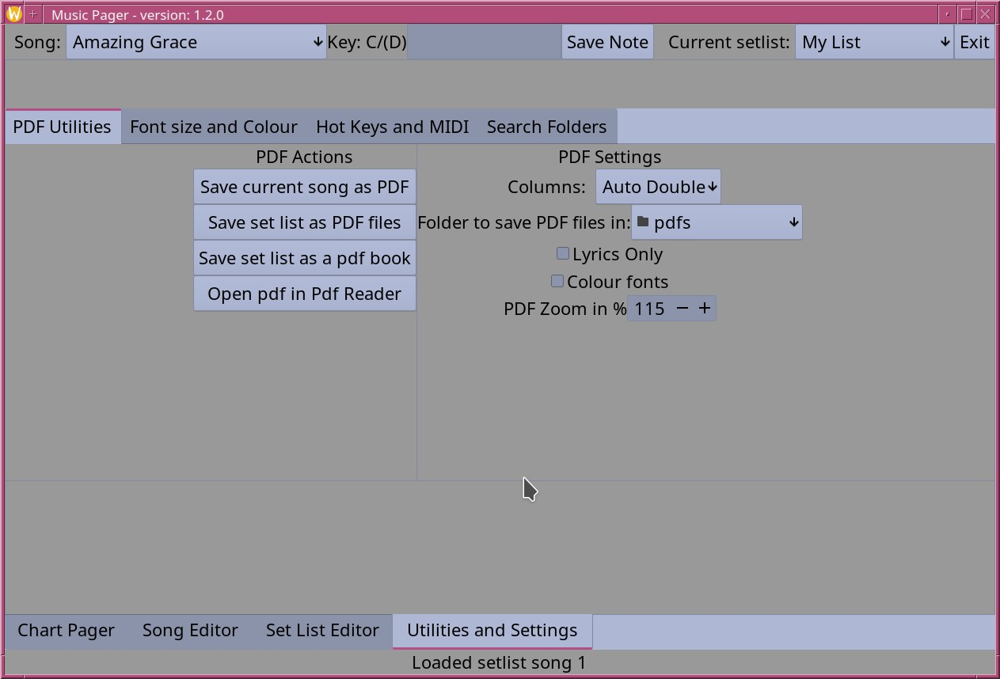
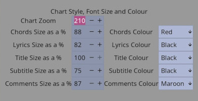
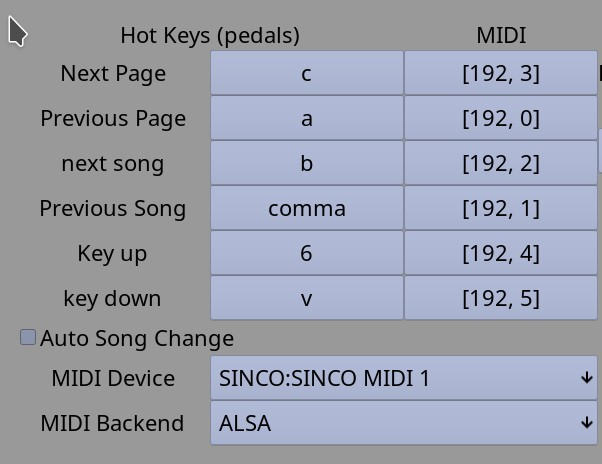
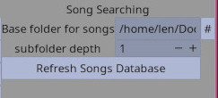

where all the settings can be changed.
There are three sections on this page:
The font size and colour section:
Each of the main parts of the chart page can have their font size and colour set.
The chart zoom sets the over all size. The fonts start as 16 pixels and are multiplied by the chart zoom and the individual font size to determine the final size. It seems it is best to set the system font size for over all best readability of all your applications and then these can be adjusted for the screen resolution so that the chart is easy to read.
The types of text can have their colours set for easy readability. It seems quite common to set the chords to red.
The hot keys and MIDI control section:
The default hot key setting comes from my personal USB pedal which has three pedals: a, b and c. Then from there 6 Has ^ above it and v is opposite then , has < Depending on the pedal, arrow keys would be better. In any case click on the function you wish to change and when the dialog opens press the key or pedal you wish to attach to that function to set it. Shifted or modified keys will not work. (who wants to deal with hitting two keys in the middle of a song?)
The Auto song change checkbox is for use with a two button pedal. At the end of the song, an extra page forward will act as a next song and at the beginning of the song, the previous page button will go to previous song. Beware this can be confusing but if a two button unit is all you have, it will work.
The midi section is much like the hot key section, select the function and press the pedal to send the MIDI event to set. Pressure, pitch bend, and keyon with velocity of 0 are filtered out. So keyon, key off, program, CC, etc. all work. I found the M-Vave chocolate plus is small enough to pack while giving useful midi codes out of the box.
First use the MIDI backend to choose between ALSA and Jack. Most modern Linux systems with PipeWire have a Jack graph runnnig all the time and will show BlueTooth devices that are paired. Then use the device drop down to connect to the MIDI device you are using.
The search settings:
The Base folder is where the song files are kept. It may be typed in or click on the # button to open a file dialog and select that way.
The subfolder depth determines how far down into sub folders will be checked. A single file can be opened anywhere but searches will happen in the base folder and sub folders. This is useful for dividing the songs by first letter for example to help keep one's sanity.
The refresh button builds a database from all the songs that can be found so that searching is faster. Press this each time you add new song files.